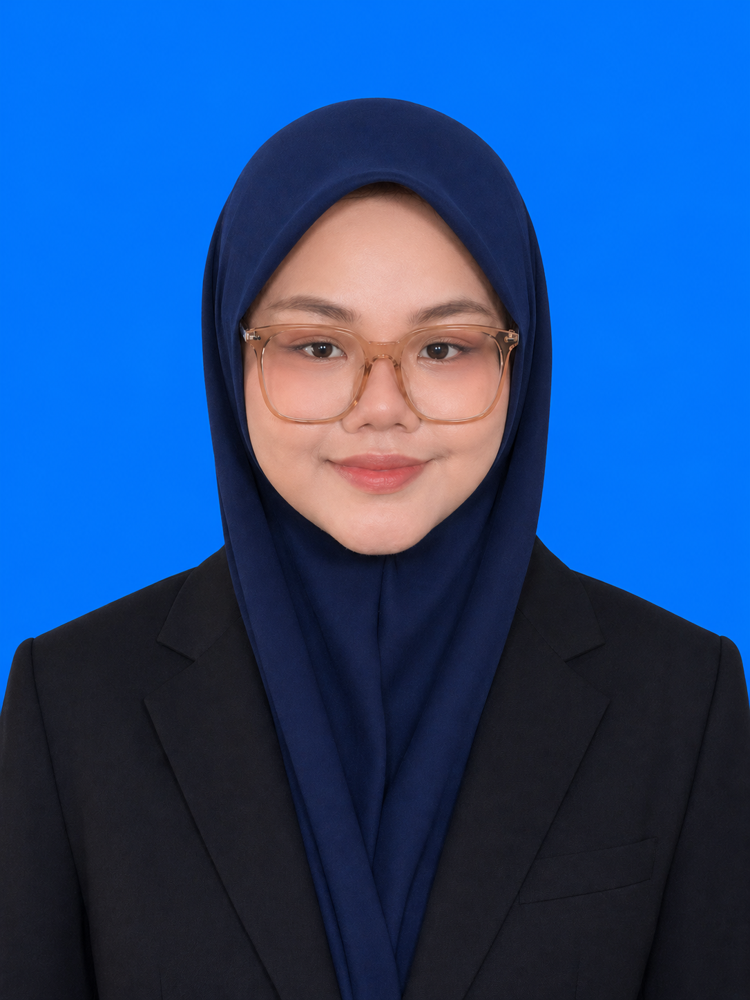
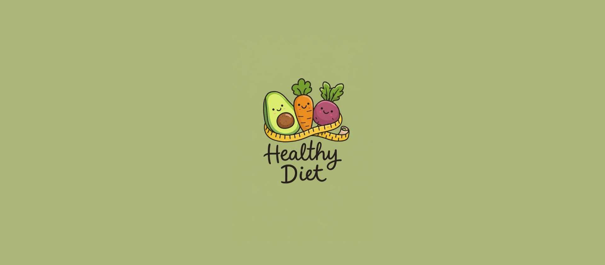
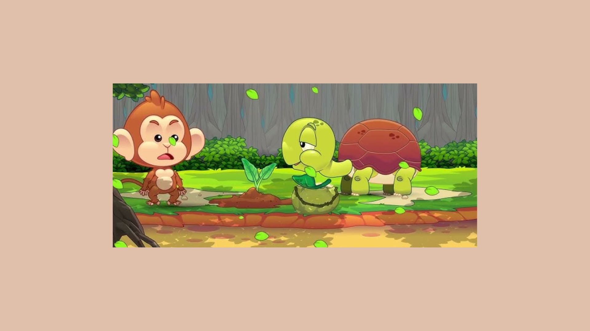
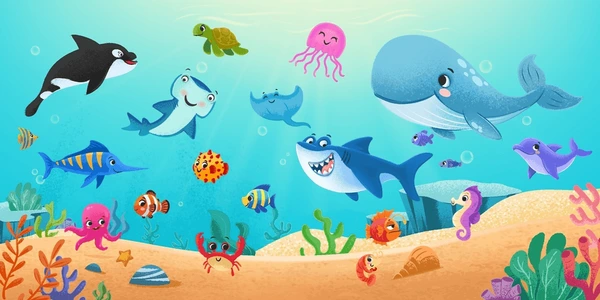
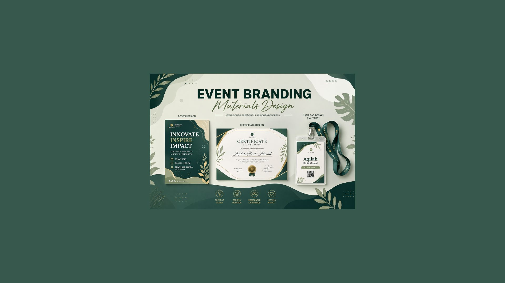
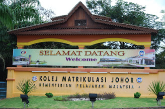

Nur Fakhiera E'zzaty Azman Shah
Multimedia Student · Web Developer · Digital Creator
About Me

A creative and motivated Multimedia Education student with a strong interest in multimedia design, web development, and digital content creation. Experienced in developing user-friendly web systems and interactive educational materials through academic projects. Skilled in using design tools such as Canva and Figma, with a good sense of visual aesthetics and user experience. Possesses strong teamwork, communication, and problem-solving skills, and is able to adapt quickly to new technologies.
Skills & Tools
Technical Skills
Design & Multimedia
Soft Skills
Productivity
Projects

School Website (SK Putrajaya Presint 8 (1))
Developed a school website to present important information such as school background, announcements, activities, and contact details. The website is designed to be user-friendly and accessible for students, teachers, and parents.
👤 My Role
Frontend developer — designed and developed the website interface, including layout, navigation, and content structure to ensure a clean and organized user experience.
💡 Reflection
Learned how to structure a complete website, improve layout design, and enhance user experience through proper navigation and visual arrangement. This project also strengthened my skills in HTML, CSS, and responsive design.

Healthy Diet App
Designed comprehensive UI/UX layouts and interactive prototypes for a mobile health application that helps users track their nutrition, plan meals, and maintain a balanced diet with personalized recommendations.
👤 My Role
UI/UX Designer — created wireframes, high-fidelity mockups, and interactive prototypes with user flow mapping in Figma.
💡 Reflection
Deepened my understanding of user-centered design, learned to create interactive prototypes, and gained experience in designing intuitive mobile interfaces.

Math Zoo Adventures
Developed an interactive educational mobile application designed for pre-school students to learn basic mathematics in a fun and engaging way. The app uses colorful visuals, simple instructions, and interactive activities to help young learners understand basic concepts such as additions and subtraction.
👤 My Role
Creative Director — responsible for designing the overall look and feel of the application, including creating the prototype using Canva. Also developed multimedia elements such as images and animations, and ensured the interface is simple, clear, and suitable for pre-school children.
💡 Reflection
Learned how to design age-appropriate educational content by focusing on simplicity, visuals, and user interaction. This project improved my skills in UI design, multimedia integration, and understanding how young learners interact with digital applications.

Putrajaya Biodiversity Documentary (Taman Saujana Hijau & Taman Botani)
Produced a short documentary video showcasing the natural beauty and biodiversity of Putrajaya, focusing on Taman Saujana Hijau and Taman Botani. The video highlights scenic landscapes, greenery, plant diversity, and recreational spaces that promote environmental awareness and appreciation of nature. It combines real footage, background music, text overlays, and smooth transitions to create an engaging visual storytelling experience.
👤 My Role
Video Editor & Voice-over Narrator — responsible for editing the full documentary using CapCut and recording the voice-over narration. Tasks included selecting and arranging clips, syncing visuals with narration, adding transitions, subtitles, background music, and visual effects to enhance storytelling and audience engagement.
💡 Reflection
Learned how to combine visual editing and voice narration to create a more immersive storytelling experience. Improved skills in video editing, audio recording, pacing, and content delivery. This project also strengthened my confidence in presenting information clearly through both visuals and narration.

Stop Motion Animation (Cartoon Cut-Out Style)
Produced a short stop motion animation using cut-out cartoon characters to create a simple storytelling video. The animation was created by capturing frame-by-frame movements to produce smooth motion effects. This project focuses on visual storytelling through handmade-style animation to make the content more engaging and creative.
👤 My Role
Stop Motion Animator — responsible for designing and arranging cut-out characters, setting up scenes, and capturing each frame using Stop Motion Studio. Also ensured smooth movement between frames by carefully adjusting timing and positioning of each character.
💡 Reflection
Learned how stop motion animation works through detailed frame-by-frame creation. Improved patience, precision, and understanding of motion timing. This project also strengthened my creativity in producing simple but expressive animations using minimal tools.

Flipbook Style Animation (Drawn Objects)
Created a short animated video using FlipaClip by drawing objects and animating them frame-by-frame. The project focuses on simple motion animation where hand-drawn elements are brought to life through sequential frames, resulting in a smooth and engaging flipbook-style animation.
👤 My Role
Animator & Illustrator — responsible for drawing all objects and scenes directly in FlipaClip and animating them frame-by-frame. Also managed timing, motion flow, and scene transitions to ensure the animation is smooth and visually consistent.
💡 Reflection
Learned how to create frame-by-frame animation using digital drawing tools. Improved skills in drawing consistency, motion timing, and creative storytelling. This project also helped me understand how simple sketches can be transformed into engaging animated videos using basic animation techniques.

Event Branding Materials Design
Designed a set of visual materials for event branding, including posters, certificates, and name tags for lanyards. The designs focus on a consistent theme, colour scheme, and typography to create a clean and professional visual identity. Each material was developed to ensure clarity, readability, and suitability for both digital use and printing purposes.
👤 My Role
Graphic Designer — responsible for designing posters, certificates, and lanyard name tags. Tasks included layout planning, selecting fonts and colours, arranging visual hierarchy, and preparing final designs for print and digital use. Ensured all materials maintained a unified and professional event branding style.
💡 Reflection
Learned how to design multiple event materials while maintaining consistency in style and branding. Improved skills in layout composition, typography balance, and print design preparation. This project also strengthened my understanding of creating clear and visually appealing communication materials for events.
Academic Journey

Bachelor of Education (Multimedia) with Honours
Universiti Pendidikan Sultan Idris
2023 – Present
Pursuing a degree focused on multimedia education with comprehensive study of web development, interactive media design, human-computer interaction, and multimedia pedagogy.

Physical Science (Pre-University Program)
Kolej Matrikulasi Johor
2021 – 2023
Completed pre-university studies with strong focus on physics, chemistry, mathematics, and computer science — providing foundational knowledge for multimedia and technology disciplines.
Experience
Leadership Positions
Exco of Economy, Entrepreneurship & Welfare
Creative Multimedia Association (PMK)
Executive leadership role managing welfare initiatives, entrepreneurship programs, and economic affairs for the student association.
Committee Member (AJK)
Panggung Khidmat (PAKAT) — State Level
Served on the state-level committee for community service initiatives at Panggung Percubaan.
National & International Recognition
International Young Future Leaders Summit
iFUTURE 2024
Selected as a University Delegate for this prestigious international leadership summit focused on future innovation and global challenges.
Dean's List Award
5 Consecutive Semesters • Current CGPA: 4.00
Consistently recognized for academic excellence with perfect GPA achievement and continuous Dean's List honors (Anugerah Dekan).
BIZZTART Entrepreneurship Program
National Level • Dewan Sri Tanjung
Participant in this prestigious national entrepreneurship program showcasing innovative business ideas and startup potential.
Putrajaya Festival of Ideas
PFOI • Innovation & Digital Economy
Participant focusing on innovative solutions for future digital economy and technological advancement.
Community & Social Impact
Lead Facilitator — Fun Coding with Scratch
Yayasan Kasih Sayang Negeri Sembilan
Led community coding program teaching children block-based programming with Scratch, promoting tech literacy.
Environmental Sustainability Initiative
Program Hijaukan Dunia, Asingkan Sampah
Participant in environmental sustainability program promoting recycling and green initiatives for planetary health.
Let's Connect
Open to internship opportunities, collaborations, and creative projects.
📍 Mersing, Johor